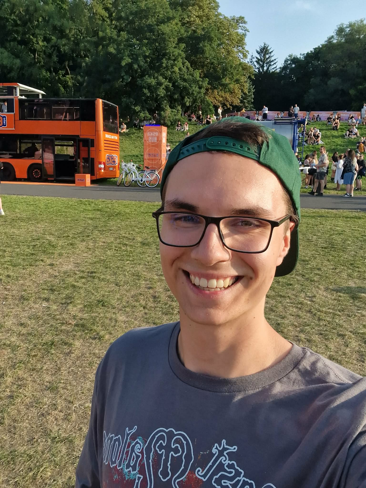

Jestem studentem trzeciego roku Informatyki na
AFiB Vistula.
Zajmuję się projektowaniem stron internetowych oraz aplikacji
webowych, prowadzę także pozalekcyjne zajęcia z programowania dla
dzieci.
Email: pawel8889@interia.pl
Telefon: 123-456-789
Miasto: Warszawa
II Liceum Ogólnokształcące im. Marii Skłodowskiej-Curie
2019 -
2023
Studia inżynierskie na kierunku Informatyka na AFiB Vistula
2023 -
obecnie